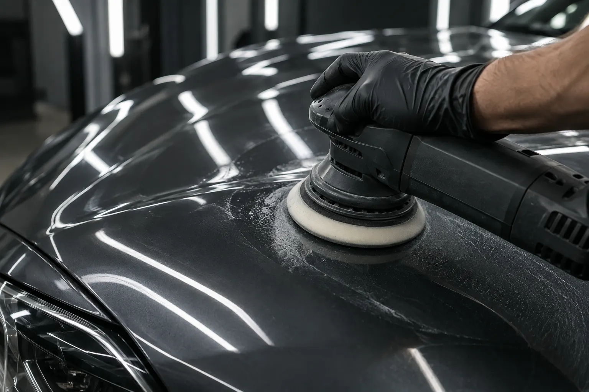

ESTÉTICA AUTOMOTIVA / FEITA COM PRECISÃO
CADA DETALHE
MUDA TUDO.
Da pintura ao interior, o cuidado certo devolve ao carro aquilo que chamou sua atenção no primeiro dia.
LUZ
PRESENÇA
O acabamento
fala por si.
Três formas de cuidar do que você vê e do que sente ao dirigir. Selecione um serviço para entender onde começa cada transformação.

O CUIDADO DE PERTO / 01O brilho começa
na superfície.
Avaliação da pintura, correção de marcas superficiais e polimento para recuperar profundidade e nitidez dos reflexos.
PEDIR AVALIAÇÃO DE PINTURAA diferença
está na luz.
Arraste a linha para comparar o aspecto da pintura antes e depois do tratamento. Imagens ilustrativas do mesmo veículo.
Precisão em
cada etapa.
O trabalho começa olhando de perto. O serviço é escolhido conforme o estado do veículo e o resultado desejado.
CONVERSAR SOBRE MEU CARROOlhar de perto
Entender o uso, o estado e os pontos que precisam de atenção.
Definir o cuidado
Escolher o tratamento adequado para pintura, proteção ou interior.
Trabalhar o detalhe
Executar cada etapa com método e revisar o acabamento.
Seu carro merece
um novo olhar.
Conte o que você gostaria de melhorar. Nesta demonstração, o formulário mostra uma confirmação local e não envia informações.